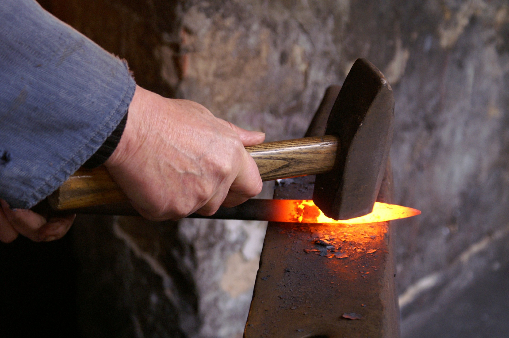

Not many, at least not many normal people know what heat treating is, let alone what the entire field of metallurgy studies. As the author of this article, I must sincerely apologize for I also am a novice, and I am writing this article as a note, or a memo of my findings across the Internet for my needs. Therefore, I cannot ensure that the terminology, glossary nor scientific knowledge provided is reliable for academic use.
With that said, I did have interest, and I had researched the topic on a hobbyist level. Also,since being on the Internet means whoever with the mic is correct, I may carry on to explain on the very basic level, what heat treating is.
Heat treating is a field of study in the domain of metallurgy, which in turn is a subset of material science. Without delving into too complex a region, heat treating is a set of actions taken to change characteristics of a given piece of any metal in general. As different metals obviously have different properties and molecular structures, the procedure differs greatly for each material.
The four main procedures taken are named 'Annealing', 'Normalizing', 'Quenching', and 'Tempering.' Other methods exist, such as 'Cryogenic treatment' but they are not often used and I cannot utilize them, so I have not enough information to provide.
Quenching and tempering are often treated together, and for good reason too. In the case of high-carbon tool steels, quenching is used to give hardness, but the stress given to the metal makes it brittle enough to shatter. Tempering is used to relieve stress and get rid of some of it's brittleness, enabling the metal to be put to actual use. Tempering differs from annealing and normalizing for it is used to preserve hardness in a piece of metal, rather than to remove it.
Quenching is a process of heating the metal up to a critical temperature, letting it soak in the heat for a set amount of time, and very rapidly cooling it down to a certain temperature, and letting it air-cool. Heat treating experts use a different term to describe heating and soaking of heat, 'Austenitizing.' Therefore, a quenching process is composed of austenitizing and actual quenching, a term used to describe rapid cooling. These critical and 'certain' temperatures differ from metal to metal, and can be found on the steel manufacturer's web page, and on different blade forums. Keeping the correct temperature, and having an even heat is crucial to achieving target hardness. Also, immediate transfer of the metal into quenching material is important to both preserve hardness, and to minimize oxidation.
The rapid cooling when quenching cannot be achieved only with thin air, so various materials, including pressurized air and plain water were and are used. However, the most popular methods of cooling are plates and oil. Plate cooling, or plate quenching, involves 2 sheets of metal, namely aluminium, to rapidly conduct heat out of the material. The material is sandwiched between 2 sheets, and the sheets conduct heat out of the metal until the metal is cool enough to handle with bare hands. This process might end as quick as within 2 minutes.
Oil also may be used to quench metals. In such cases, one must utilize high flash point oils, as to reduce chances of combustion of oils during quenching. Specific oils are manufactured for quenching, but high smoke point vegetable oils, such as canola, grapeseed or oilve oils are said to be a good substitute. The process is similar to above, as in that the metal is heated to critical temperature, left to soak for a set time, and immediately submerged in a tank of oil. Optionally, since most modern steels or stamped tools do not need it, a smith can take the metal out after the metal has cooled down to a certain temperature to check and adjust for straightness.
Tempering the metal is to heat the quenched metal to a mostly oven-safe temperature and letting it bathe in the heat for a set time. As stated above, quenched steels can get to razor sharpness, but will crack or shatter under pressure. This is undesirable for tool usage, so tempering reintroduces a fraction of malleability to the piece, while not losing hardness. Normally, the temperature required can get as low as 400 F, or about 204 C, which can be achieved in a home oven. Many backyard bladesmiths actually use their ovens to temper the blade they make.
This article will end with examples of temperatures for a specific type of stainless steel manufactured by Crucible, 154CM. This steel was chosen not for any other reason than the fact that I have it. Much of the information is from the website of Crucible, but I also have gathered some information from forums.
This steel should be preheated according to the webpage, at 1400F, 760C, but many of the people on forums have concluded from experience that this step is not necessary. After, the material is heated to a range of from 1900F, 1037C, to 2000F, 1093C, and left at that temperature for 30 to 60 minutes. People in the forums have suggested 1900F, or 1950F for optimum performance, and the time of 30 minutes. After austenitizing, the material must be transferred into a quenching system, in my case, only oil is a viable option, and dropped to 1000F, 540C. At this temperature, the material can be taken out for straightening.
After quenching, tempering takes place. The material can be tempered in a temperature of anywhere from 400F to 1200F, but due to material characteristics of all stainless steels, temperature range of 800F to 1100F should be avoided. Most forums suggest 400F, as this temperature can be achieved with ovens. The time suggested varies drastically from forum to forum, but the manufacturer suggests 2 tempering sessions each of 2 hours. One heat treatment specialty company suggest 300F for 2 hours, and 275F for 2 hours after.
Optionally, the material can be cyrogenically treated for performance, and many forums recommend doing so. Heat treatment companies utilize liquid nitrogen, but for backyard forging, dry ice and acetone mixture can achieve similar properties. The cyrogenic treatment can take place either just after quenching, or after first tempering. The manufacturer suggests the former for optimum hardness, but recommends latter for safekeeping, as the piece might shatter under extreme temperatures. The time spent can vary from one hour to overnight, and neither manufacture nor any of the forums suggest a set time for optimum performance.
While austenitizing and quenching, most forums and companies recommend covering the piece with compatible steel foil to protect the piece from oxidation and degradation of performance due to carbon leaking out. This is not required, but recommended.
